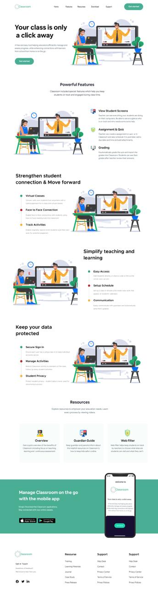

View student screens
Teachers can see student activity and maintain classroom visibility during lessons.
UI/UX Case Study · Classroom LMS
A classroom-management and learning experience focused on helping teachers connect with students, manage activities, simplify teaching, and keep learning organized across web and mobile.

01 · Overview
The supplied Classroom LMS screen presents a focused education product: a direct hero message, powerful classroom features, connection and activity tools, simplified teaching, protected data, resources, and a mobile-app CTA.
This is one complete project. The supplied screenshot is used as the primary visual reference throughout the case study and is included in the final site files.
"Good classroom technology should make teaching simpler and student connection stronger."
02 · Research & Discovery
The reference image communicates its product story through a clear sequence of classroom features, teaching benefits, privacy, resources, and mobile access.
Teachers can see student activity and maintain classroom visibility during lessons.
Assessment tools support structured learning activities and classroom management.
Grading reduces repetitive work and gives teachers a simpler way to manage results.
Resources and the mobile app extend the classroom experience beyond the main workspace.
03 · Problem
Teachers need visibility, communication, assessment, scheduling, and privacy tools while students need a clear and dependable learning environment. The product has to communicate all of this without making the experience feel heavy.
Viewing students, tracking activities, assignments, quizzes, and grading all compete for attention.
The platform needs to support real-time classroom interaction while keeping the workflow easy to understand.
Secure sign-in, activity management, and student privacy are essential parts of the product story.
04 · UX Process
Reviewed the supplied screenshot, feature sections, resource cards, app promotion, and footer structure.
Defined the main experience goal as stronger student connection with simpler teacher workflows.
Grouped classroom visibility, assessment, connection, teaching, security, resources, and mobile access.
Used the reference's friendly educational illustration style and teal-green visual language.
Focused on hierarchy, whitespace, scanability, responsive behaviour, and CTA clarity.
05 · Information Architecture
06 · Design Principles
Show how the platform strengthens teacher-student interaction instead of only listing tools.
Highlight automation, scheduling, and simple classroom management as practical benefits.
Security and student privacy deserve their own clear section in the product story.
Resources and mobile access extend the experience beyond a single classroom screen.
07 · Final UI
The supplied screenshot is used as the single final/reference visual for this project — there's no second alternate design included.
08 · UI System
A strong editorial heading paired with a clean sans-serif system keeps educational content friendly and easy to scan.
09 · Outcome
10 · Reflection
The Classroom reference demonstrates how a product can communicate a large feature set through a simple vertical story. The strongest UX opportunity is not adding more information, but organizing existing information around the teacher's goals: connect, teach, track, protect, and continue learning.
The next step would be usability testing with teachers and students to validate whether feature benefits are immediately understandable and whether the path from classroom problem to product solution feels natural.